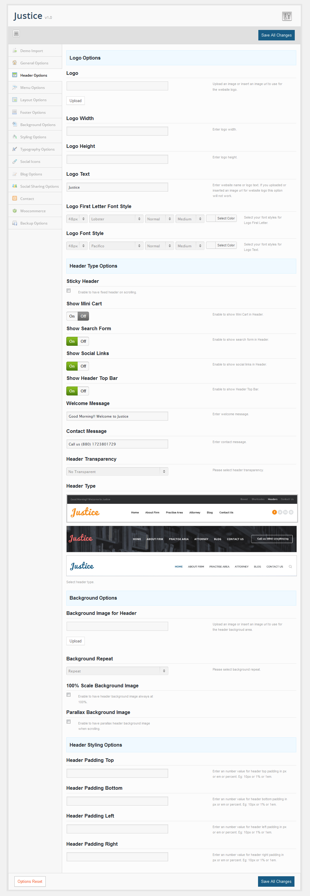
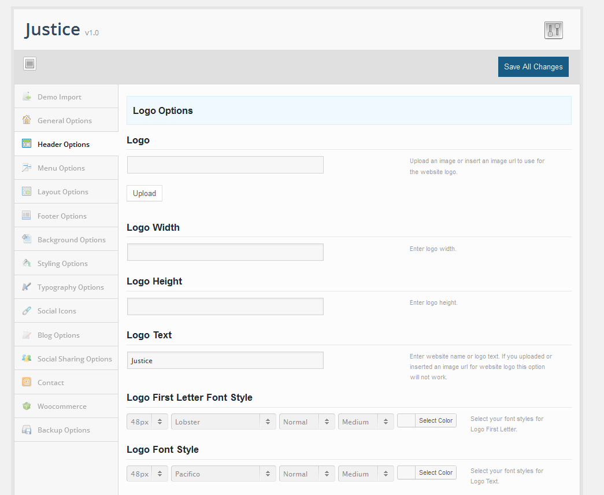
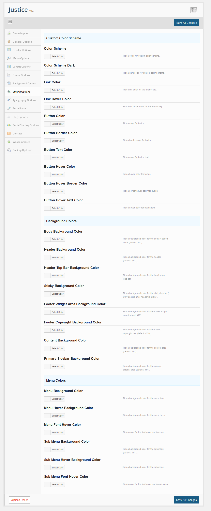
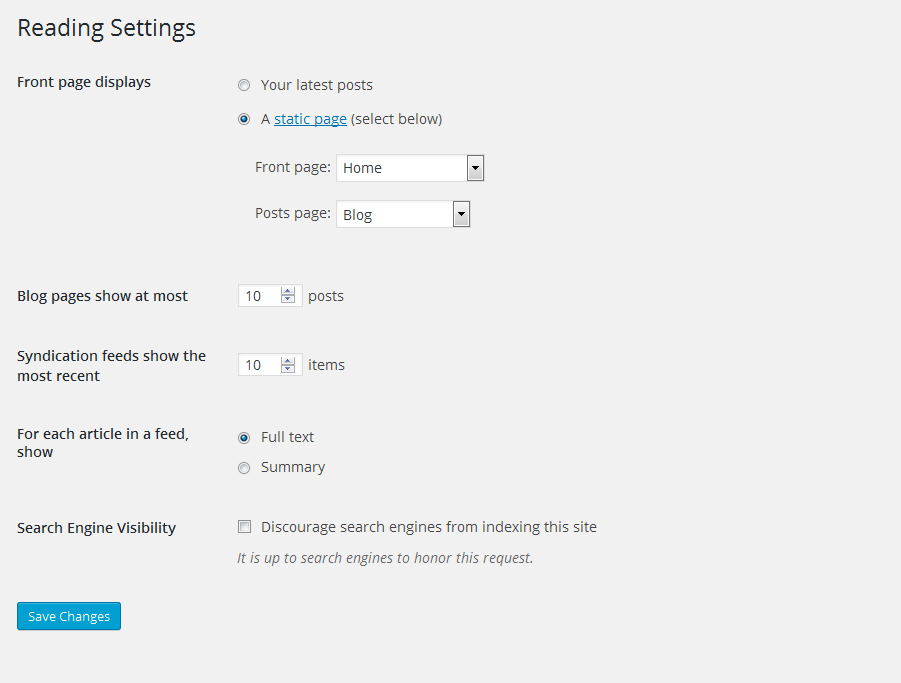
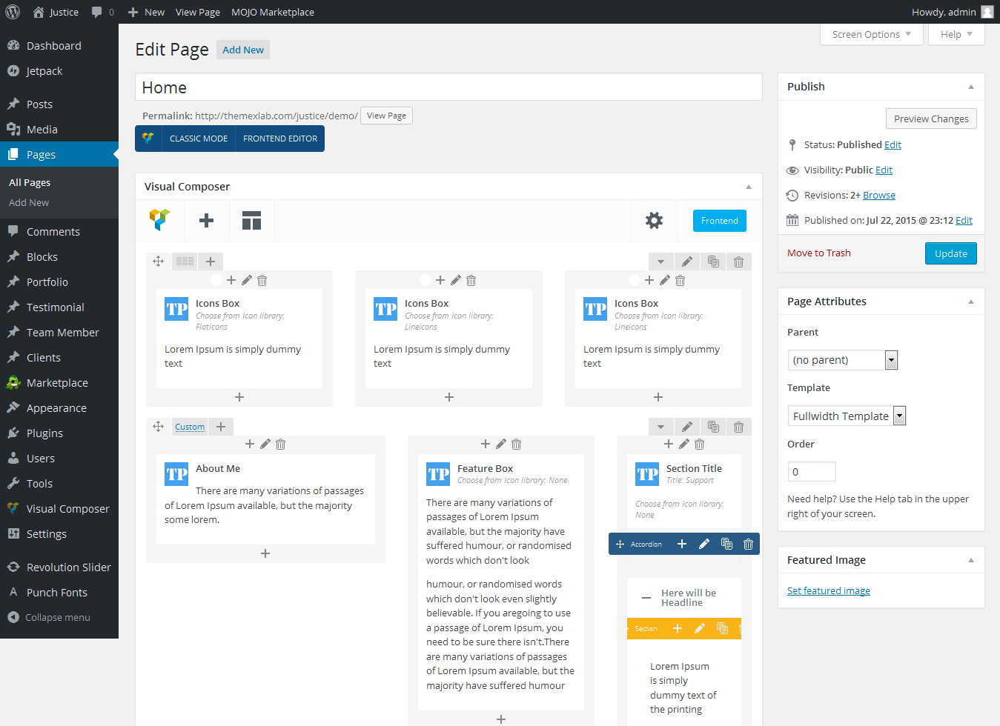
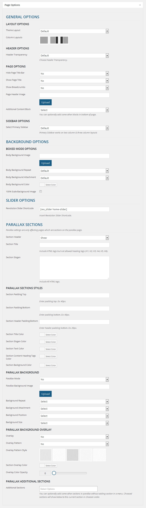
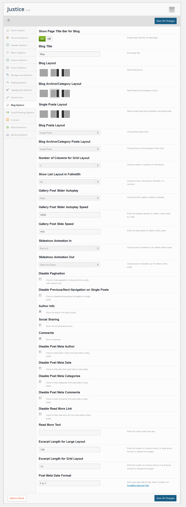

We have include the exported XML file from our demo, this allows you to quickly set up your theme. The XML file will give you all of our demo pages.
In Theme Options panel, "Import Demo Content" button will import demo posts, pages and media files.
In Theme Options panel, "Import Theme Options" button will import theme option settings like our demo page. This button doesnt import pages, posts or media.
Our Theme Options Panel have too many options to make changes easily with your theme. Please click "Save All Changes" button to save your settings once you are done.
You can also backup your theme options, click on the "Backup Options" tab and copy the data inside the Transfer Theme Options Data field or click "Backup Options" to store with your database and in future you can restore it by clicking "Restore Options" button.
In Theme Options Panel you can quickly change your logo and can customize it.
Go to "Header Options" tab and check for "Logo Options" section and Upload an logo to show or use text to show in logo. Also you can easily change with logo text font, size, color and styles in same tab.
To change with color scheme navigate to "Styling Options" tab in Theme Options Panel and make changes on it.
You can easily change colors based on elements and sections.
Our theme includes Revolution slider options. You can use shortcodes to show your home page with custom options.
Our theme supports visual editer.Can create page design with drag and drop by using visual editor. To set Layout home page, Create new page and choose page template "Parallax" and add needed pages in menus and choose your parallax page as "Section" in each menu item. And also additional pages that not added under menu can add in each single pages.
Our theme have 4 page templates.
Our theme includes too many options for a page. You can easily change slider, layout, sidebar, footer and other options differently to each pages.
Our theme supports the following post formats.
Our theme have options to embed video and audio code based on post formats. Also have option to insert external URL and link title for "Link" post formats.
Also theme includes too many options for a post. You can easily change layout, sidebar and footer options differently to each posts.
To setup your blog page, create a new page. Make sure the page template is set to Default Template in the Page Attributes Box. Also choose layout based on design in "Page Options" box below to editor. Our theme has 3 different blog layout designs - Large Layout, List Layout, Grid Layout.
Add Blog layout designs on pages through Shortcodes in Editor.
You can easily customize blog page, category page and single post page via theme options panel.
Theme options to enable and disable pagination or infinite scroll, author info, social sharing of posts, comments, post meta and different custom excerpt length for large, list and grid posts layouts.
If you need help, please feel free to contact us! All issues, requests and questions can be discussed and answered at our Support Team.
If you have got some issues we gladly help you out.